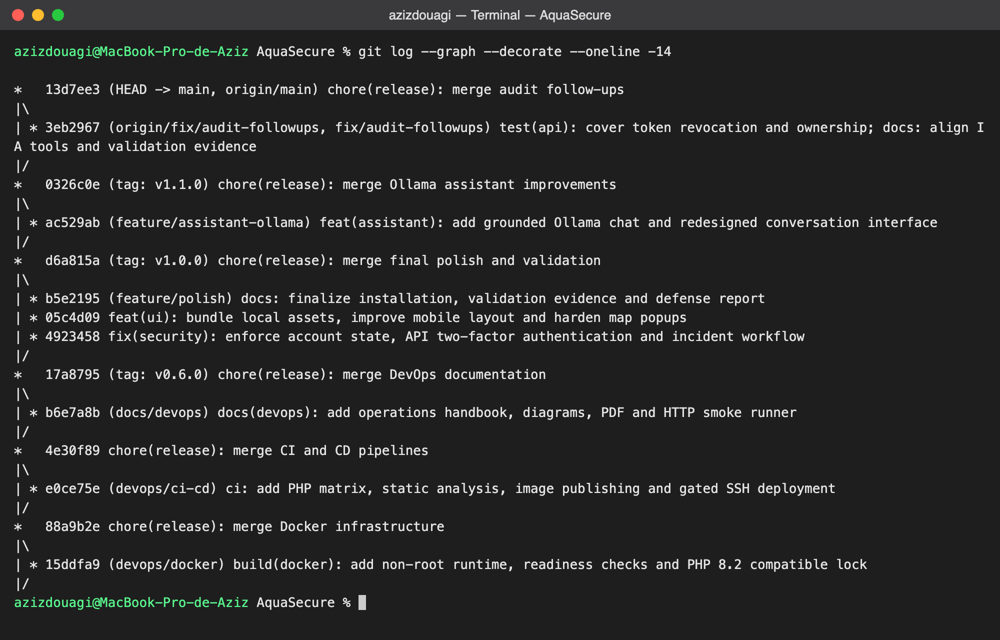
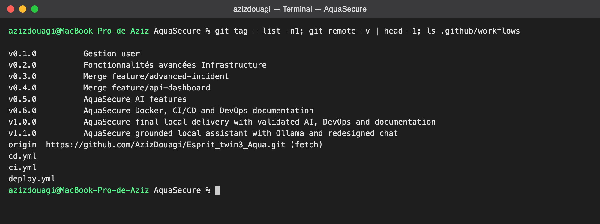
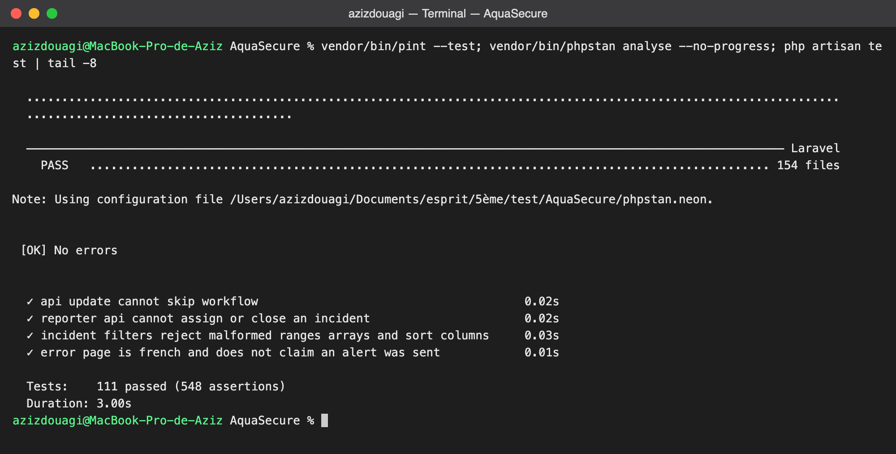
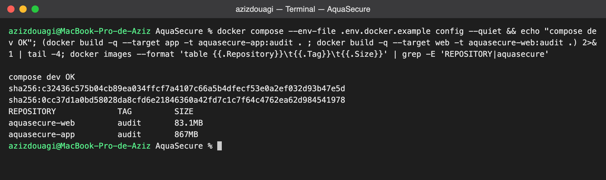
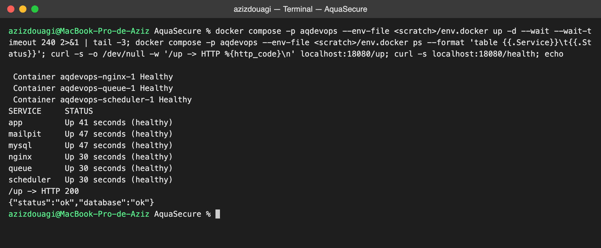
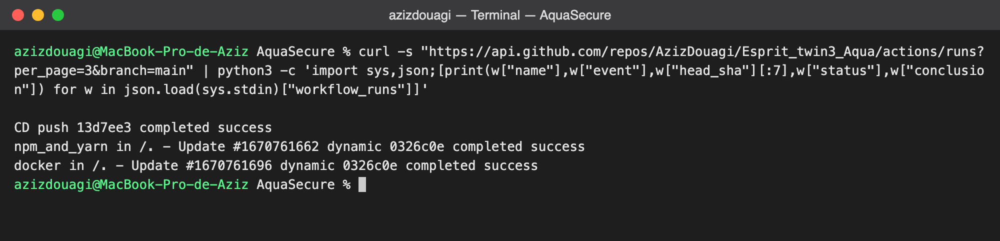

Comment nous construisons, vérifions et livrons le projet, expliqué simplement, avec les commandes réellement exécutées.
AquaSecure surveille un réseau d’eau : infrastructures, relevés, incidents. Une erreur de livraison n’y est pas anodine. Nous voulions donc qu’une modification ne parte jamais en production sans avoir été relue, testée et reconstruite à l’identique.
Le mot DevOps désigne cette habitude : ceux qui développent et ceux qui exploitent travaillent dans une seule boucle, avec des étapes automatiques plutôt que des manipulations à la main. Plus un défaut est détecté tôt, moins il coûte cher à corriger, et c’est exactement l’idée du « shift left » vu en cours.
Deux schémas, comme demandé : le processus DevOps mis en place dans le projet, puis le pipeline qui va du développement à l’intégration continue (CI) et au déploiement continu (CD). Chaque étape est ensuite illustrée par une vraie commande lancée dans le terminal du Mac, avec son résultat.
Une précision d’honnêteté dès maintenant : tout ce qui est montré ici a été exécuté pour de vrai, sauf le déploiement final sur un serveur, que nous n’avons pas activé (voir le dernier chapitre).
Le travail ne s’arrête jamais à la mise en ligne : ce que l’on observe en production nourrit la prochaine idée. En haut, le côté développement ; en bas, le côté exploitation.
On planifie un besoin, on le code sur sa propre branche, puis on le construit et on le teste automatiquement. Si tout est vert, on le livre sous forme d’image Docker, on le déploie et on l’exploite. Enfin on supervise : les routes /up et /health indiquent si l’application et sa base répondent, et ce que l’on constate relance la planification.
Concrètement, AquaSecure a avancé phase par phase : gestion des utilisateurs, infrastructures, incidents, API et tableau de bord, intelligence artificielle, puis Docker et CI/CD. Chaque phase a eu sa branche, sa fusion et son numéro de version.
Le pipeline est le chemin qu’un changement emprunte, de l’ordinateur du développeur jusqu’au serveur. Il se lit de haut en bas, en trois temps.
Développer : on travaille sur une branche et on vérifie localement. Intégrer : GitHub Actions rejoue toutes les vérifications dans un environnement neuf, ce qui évite le fameux « chez moi ça marche ». Déployer : on publie les images, puis on les met en service, avec une validation humaine avant la production.
Nous ne travaillons jamais directement sur main. Chaque phase (authentification, incidents, API, IA, Docker, CI/CD) vit sur sa branche, puis revient avec une fusion explicite. Le graphe ci-dessous, tiré du terminal, montre ces boucles de fusion.

git log --graph --decorate --oneline -14 : chaque phase fusionnée sur main avec son message normalisé.Les versions sont ensuite posées comme des repères sur l’historique, et le dépôt est bien relié à GitHub, avec les trois workflows du projet.

ci.yml, cd.yml, deploy.yml.La CI enchaîne trois contrôles que nous avons rejoués à la main pour cette capture : Pint vérifie la présentation du code, PHPStan cherche les erreurs que le typage laisse passer, et PHPUnit exécute les tests. Sur GitHub, la même série tourne sur PHP 8.2 et PHP 8.3, avec une vraie base MySQL, puis un build Vite et un audit des dépendances.

Pourquoi autant d’exigence ? Parce qu’un test qui passe sur un seul ordinateur ne prouve pas grand-chose. En répétant la vérification sur des machines vierges, nous nous rapprochons des conditions réelles. Concrètement, le fichier ci.yml contient deux tâches : quality, qui joue la série Pint, PHPStan et PHPUnit sur les deux versions de PHP, et images, qui construit les images Docker et démarre la pile pour de vrai. Si l’une échoue, rien n’est publié. Nous avons aussi mesuré la couverture : environ 87 % des lignes du code applicatif sont exécutées par les tests.
Le Dockerfile construit deux images à partir du même code : une pour l’application (PHP-FPM, utilisateur non-root, OPcache) et une pour le serveur web Nginx. Le front-end est compilé avec Vite dans une étape séparée, donc l’image finale ne transporte pas Node.

app et web.On démarre ensuite toute la pile d’un seul geste. L’option --wait attend que chaque service se déclare en bonne santé : base de données, application, Nginx, file de tâches, planificateur et boîte mail de test. Un simple appel à /up et /health confirme que l’application répond et qu’elle parle bien à sa base.

/up en 200 et /health avec « database : ok ».Une fois le code poussé sur main, le workflow CD relance d’abord la CI, puis construit et publie les images sur GHCR. Voici l’état réel interrogé auprès de GitHub, directement depuis le terminal.

Le déploiement par SSH est volontairement protégé : il ne se déclenche que si la variable DEPLOY_ENABLED vaut true, et la production exige une version v* déjà passée par le staging et approuvée par une personne. Après chaque mise en service, un contrôle de /health décide : s’il échoue, les images précédentes sont remises en place. Les migrations restent additives pour qu’un retour arrière ne détruise aucune donnée.
Nous n’avons pas activé de déploiement sur un vrai serveur : cela demande une machine, des clés SSH et des secrets GitHub (SSH_HOST, SSH_USER, SSH_PRIVATE_KEY, SSH_KNOWN_HOSTS) que nous n’avons pas créés. Cette partie est donc prête et relue, mais non exécutée.
Enfin, l’intelligence artificielle fonctionne par défaut avec un fournisseur local déterministe ; l’appel au service Anthropic n’a pas été testé en réel faute de clé. Nous préférons le dire clairement plutôt que de présenter comme validé ce qui ne l’est pas.